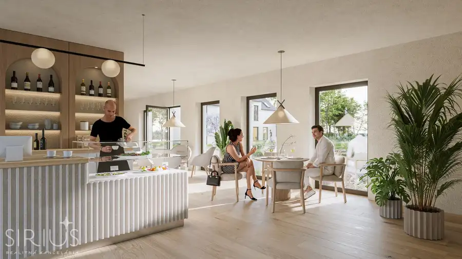
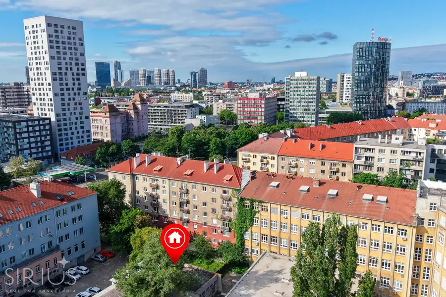
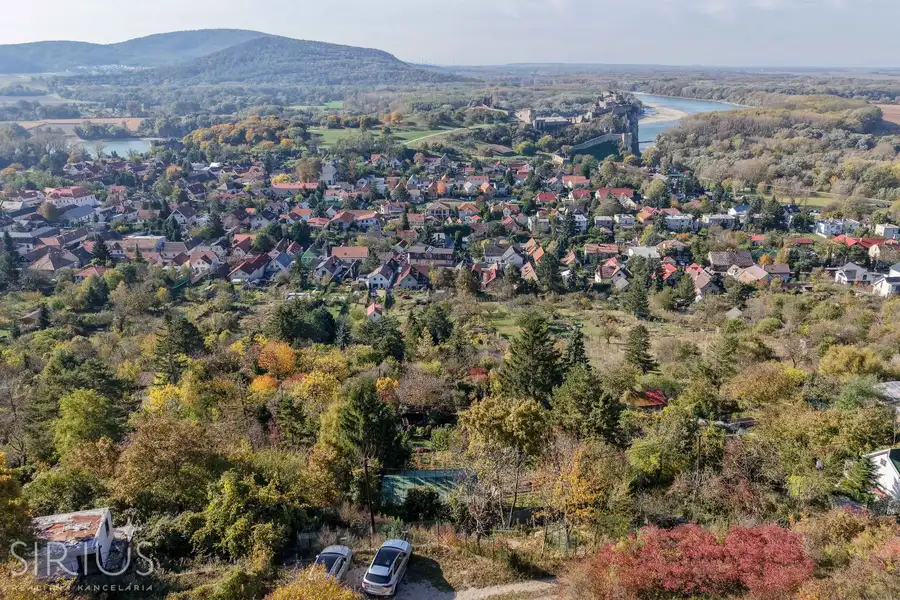

Krásnohorská – 2i byt s loggiou pri Draždiaku a električke
Petržalka, Bratislava
- Dispozícia2-izbový
- Plocha42 m²
- Poschodie5. z 12
- Stavčiastočne prerobený
- Vlastníctvoosobné
O nehnuteľnosti
SIRIUS Realitná kancelária exkluzívne ponúka na predaj praktický 2-izbový byt s loggiou na Krásnohorskej ulici v Petržalke, situovaný na 5. poschodí zrekonštruovaného bytového domu.
Ak hľadáte kompaktné bývanie s dvoma obytnými miestnosťami, dobrou dostupnosťou do centra a zároveň s prírodou na dosah, táto ponuka stojí za pozornosť.
K hlavným benefitom patrí západná orientácia, loggia, praktická dispozícia, pokojné umiestnenie domu mimo frekventovanej cesty a výborná občianska vybavenosť. Veľkým plusom lokality je nová petržalská električka, vďaka ktorej získala táto časť Petržalky rýchle spojenie smerom do centra.
Na voľný čas máte nablízku Veľký Draždiak, zeleň, hrádzu a možnosti na beh, cyklistiku či korčuľovanie. V okolí zároveň nájdete obchody, služby, zdravotnú starostlivosť vrátane nemocnice Antolská a ďalšiu občiansku vybavenosť potrebnú pre každodenný život.
Byt preto dáva zmysel ako vlastné bývanie pre jednotlivca alebo pár, praktické bývanie pre seniora, ale aj ako investičná nehnuteľnosť určená na dlhodobý prenájom.
Nehnuteľnosť je voľná a bez tiarch.
ZÁKLADNÉ INFORMÁCIE:
• Bratislava V – Petržalka, Krásnohorská ulica
• 2-izbový byt / dvojgarsónka
• celková plocha: 41,86 m² (byt 35,65 m² + loggia: 4,70 m² + pivnica: 1,51 m²)
• 5. poschodie / 12
• západná orientácia
• zateplený panelový bytový dom
• čiastočne zrekonštruovaný stav
• latková pivnica na prízemí
• parkovanie pred domom a v okolí
• mesačný zálohový predpis vo výške 161EUR + plyn + elektrina
STAV A VYBAVENIE BYTU:
Byt je v čiastočne zrekonštruovanom a udržiavanom stave. Približne pred 7 rokmi boli vymenené plastové okná, vnútorné a vonkajšie žalúzie, laminátové podlahy, radiátory a zrekonštruovaná kúpeľňa s WC. V chodbe sa nachádza vstavaná skriňa a byt je čerstvo vymaľovaný.
Dispozíciu tvoria dve obytné miestnosti, denná časť s výstupom na loggiu, vstupná chodba so vstavanou skriňou a kúpeľňa s vaňou a Geberit WC. K bytu prislúcha aj pivnica na prízemí domu.
BYTOVÝ DOM:
Samotný bytový dom je ďalším plusom tejto ponuky. Prešiel rozsiahlou obnovou, v rámci ktorej boli realizované:
• zateplenie a nová fasáda
• nová strecha
• nové výťahy
• nové vstupné brány na čip
• nové zvončeky
• kamerový systém
• nové poštové schránky
• renovované spoločné priestory
• nové stúpačky
Dom je navyše situovaný mimo frekventovanej hlavnej cesty, čo prispieva k pokojnejšiemu bývaniu.
LOKALITA – MESTO NA DOSAH, DRAŽDIAK ZA ROHOM:
Krásnohorská ponúka veľmi dobrú kombináciu toho, čo sa pri mestskom bývaní často hľadá ťažko – dopravnú dostupnosť, kompletnú občiansku vybavenosť a množstvo zelene a rekreačných možností v okolí.
Výrazným benefitom je nová petržalská električková trať, ktorá podstatne zlepšila spojenie tejto časti Petržalky so zvyškom Bratislavy.
Na oddych a šport máte nablízku Veľký Draždiak, hrádzu, cyklotrasy a množstvo zelene.
Každodenný život zjednodušuje dostupnosť potravín, lekární, škôl, škôlok, reštaurácií, služieb a nemocnice Antolská. Dobré cestné napojenie zároveň uľahčuje pohyb autom smerom do centra aj mimo Bratislavy.
Z NÁŠHO POHĽADU:
Praktický byt na dobrom mieste, ktorý dáva zmysel na vlastné bývanie, aj ako investícia.
Jednotlivec alebo pár získajú dve obytné miestnosti, loggiu a výbornú dostupnosť. Starší kupujúci ocení služby, zdravotnú starostlivosť a MHD v okolí. Investor zase univerzálnu dispozíciu a lokalitu vhodnú na dlhodobý prenájom.
Veľkým plusom je zrekonštruovaný bytový dom, pokojnejšie umiestnenie mimo hlavnej cesty a kombinácia električky, Draždiaka a kompletnej občianskej vybavenosti.
Byt je navyše voľný a pripravený na odovzdanie novému majiteľovi.
CENA:
194 900EUR
Konečná CENA BEZ ĎALŠÍCH POPLATKOV – vážime si našich klientov a preto všetky štandardné poplatky spojené s prevodom vlastníctva na Katastri máte od nás GRÁTIS.
POSTARÁME SA O VÁS – budeme vás sprevádzať celým obchodom, od prvej obhliadky až po odovzdanie kľúčov od vášho nového bývania.
Právny servis, bezplatné hypotekárne poradenstvo, súdny znalec, bytový dizajnér, pomoc pri predaji inej nehnuteľnosti...
SIRIUS – VÁŠ KOMPAS VO SVETE REALÍT
Dajte nám o sebe vedieť
www.sirius.sk
Parametre
| Celková rozloha | 42 m² |
|---|---|
| Úžitková plocha | 42 m² |
| Poschodie | 5/vyššie poschodie |
| Počet poschodí | 12 |
| Počet izieb | 2 |
| Vlastníctvo | osobné |
| Stav | čiastočne prerobený |
| Lódžia | áno - 1 |
| Pivnica | áno |
| Výťah | áno |
| Parkovanie | verejné |
| Postavené z | panel |
| Zateplený objekt | áno |
| Energetický certifikát | nie |
| Orientácia | západná |
| Dátum zverejnenia | 18. 9. 2026 |
Kde to je
Mohlo by Vás zaujímať

Nebytové priestory10 106 470 €Južná Brána – Mlynský Klin | komerčné priestory od 39 m² Senec 320 m² OTVORTE SVOJE PODNIKANIE TAM, KDE UŽ ŽIJÚ VAŠI ZÁKAZNÍCI Nová rezidenčná štvrť. Rastúca spádová oblasť. Moderné priestory s možnosťou prispôsobenia…
Nebytové priestory10 139 900 €Trnavská cesta – 48 m² – viacúčelový priestor + parkovanie Nové Mesto, Bratislava 48 m²1. podlažie VLASTNÉ ZÁZEMIE PRE PODNIKANIE NA VÝBORNEJ BRATISLAVSKEJ ADRESE. SIRIUS Realitná kancelária exkluzívne ponúka na predaj praktický nebytový priestor s…
Záhrady10 379 900 €DEVÍN, záhrada 830 m2 s neopakovateľným VÝHĽADOM na HRAD DEVÍN a DUNAJ Devín, Bratislava 830 m² SIRIUS Realitná kancelária exkluzívne ponúka na predaj výnimočnú záhradu s chatou v nádhernom prostredí chráneného územia a s fantastickými…